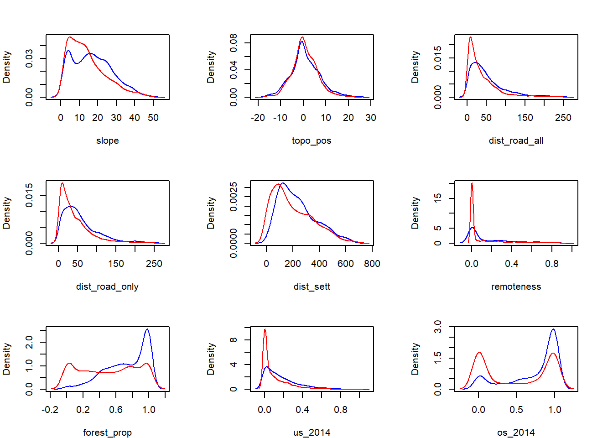
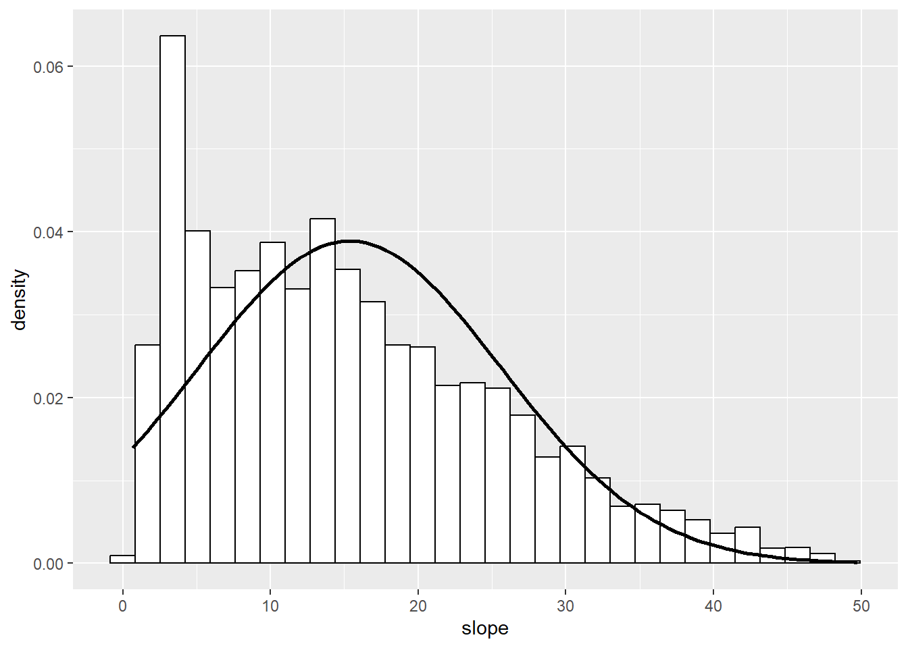
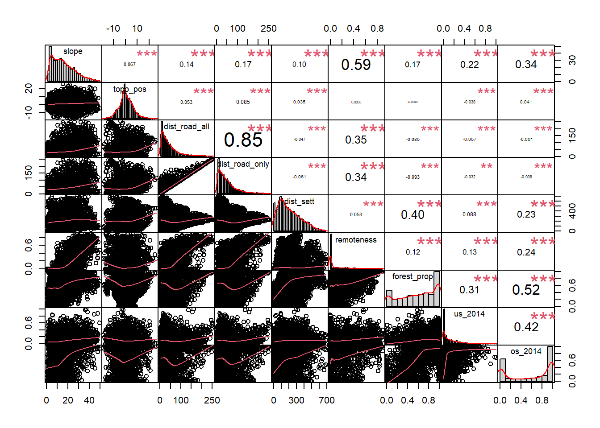
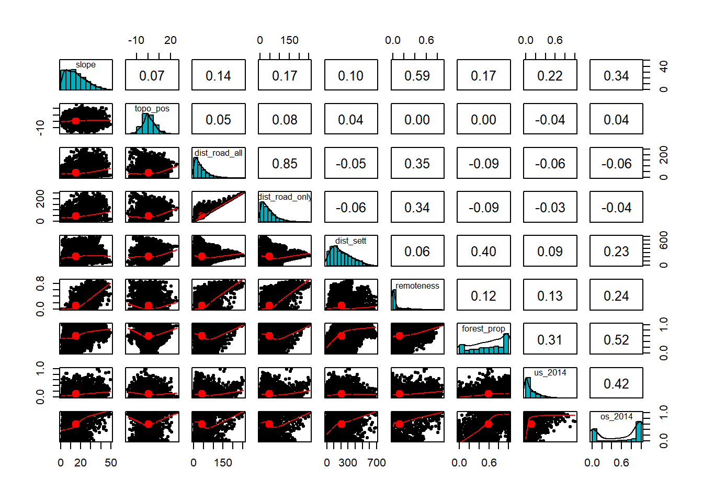

library("sf")
library("terra")
library("dplyr")
library("readr")
library("ggplot2")
library("PerformanceAnalytics")
library("pastecs")
library("car")
library("psych")4. Einstieg Multivariate Modelle - Übung
Einstieg Multivariate Modelle / Habitatselektionsmodell
Libraries laden
Aufgabe 1
Einlesen des Gesamtdatensatzes für die Multivariate Analyse von Moodle
- Sichtung des Datensatzes, der Variablen und der Datentypen
- Kontrolle wieviele Rehe in diesem Datensatz enthalten sind
Code
DF_mod <- read_delim("datasets/fallstudie_n/Aufgabe4_Datensatz_Habitatnutzung_Modelle_20221031_moodle.csv", delim = ";")
str(DF_mod)
class(DF_mod$time_of_day)
table(DF_mod$id)
DF_mod |>
group_by(id) |>
summarize(anzahl = n())
length(unique(DF_mod$id))Aufgabe 2
Unterteilung des Datensatzes in Teildatensätze entsprechend der Tageszeit
Code
DF_mod_night <- DF_mod |>
filter(time_of_day == "night")
DF_mod_day <- DF_mod |>
filter(time_of_day == "day")
# Kontrolle
table(DF_mod_night$time_of_day)
##
## night
## 4185
table(DF_mod_day$time_of_day)
##
## day
## 4185Aufgabe 3
Erstellen von Density Plots der Präsenz / Absenz in Abhängigkeit der unabhängigen Variablen. Diese Übung dient einer ersten groben Einschätzung der Wirkung der Umweltvariablen auf die abhängige Variable (Präsenz/Absenz in unserem Fall)
# Ein Satz Density Plots für den Tagesdatensatz und einer für den Nachtdatensatz
par(mfrow=c(3,3), mar=c(4, 4, 3, 3)) # Vorbereitung Raster für Plots
# innerhalb des for()-loops die Nummern der gewünschten Spalten einstellen
for (i in 6:12) {
dp <- DF_mod_day |> filter(pres_abs == 1) |> pull(i)
dp <- density(dp)
da <- DF_mod_day |> filter(pres_abs == 0) |> pull(i)
da <- density(da)
plot(0,0, type="l", xlim=range(c(dp$x,da$x)), ylim=range(dp$y,da$y),
xlab=names(DF_mod_day[i]), ylab="Density")
lines(dp$x, dp$y, col="blue") # Präsenz
lines(da$x, da$y, col="red") # Absenz
}
Aufgabe 4
Testen eurer erklärenden Variablen auf Normalverteilung (nur kontinuierliche)
Code
# klassischer Weg mit shapiro-wilk (mehrere Spalten, verschiedenene statistische
# Kenngrössen werden angezeigt. Normalverteilung: Wert ganz unten. p>0.05 = ja)
round(stat.desc(DF_mod_day[6:12], basic= F, norm= T), 3)
## slope dist_road_all dist_road_only dist_build forest_prop us
## median 13.442 28.248 33.693 129.838 0.632 0.059
## mean 15.055 41.289 46.374 154.502 0.590 0.120
## SE.mean 0.158 0.642 0.665 1.625 0.005 0.002
## CI.mean.0.95 0.311 1.259 1.303 3.186 0.010 0.005
## var 104.994 1725.368 1848.647 11050.895 0.107 0.023
## std.dev 10.247 41.538 42.996 105.123 0.328 0.151
## coef.var 0.681 1.006 0.927 0.680 0.555 1.259
## skewness 0.753 1.914 1.666 0.631 -0.366 1.674
## skew.2SE 9.945 25.285 22.003 8.341 -4.832 22.115
## kurtosis -0.042 4.250 3.147 -0.537 -1.094 3.061
## kurt.2SE -0.279 28.079 20.790 -3.545 -7.226 20.226
## normtest.W 0.942 0.800 0.837 0.943 0.919 0.792
## normtest.p 0.000 0.000 0.000 0.000 0.000 0.000
## os
## median 0.754
## mean 0.586
## SE.mean 0.006
## CI.mean.0.95 0.013
## var 0.173
## std.dev 0.416
## coef.var 0.710
## skewness -0.388
## skew.2SE -5.124
## kurtosis -1.586
## kurt.2SE -10.481
## normtest.W 0.791
## normtest.p 0.000
# empfohlener Weg
ggplot(DF_mod_day, aes(slope)) + geom_histogram(aes(y=..density..), color = "black", fill = "white") +
stat_function(fun = dnorm, args = list(mean = mean(DF_mod_day$slope, na.rm = T),sd = sd(DF_mod_day$slope, na.rm = T)), color = "black",size = 1)
Code
# Aufgabe 4: die Verteilung bei einem Teildatensatz zu testen reicht,
# denn die verwendeten Kreise sind die selben am Tag und in der Nacht,
# nur die Nutzung durch das Reh nichtAufgabe 5
Explorative Analysen der Variablen mit Scatterplots / Scatterplotmatrizen
- Zu Scatterplots und Scatterplotmatrizen gibt es viele verschiedene Funktionen / Packages, schaut im Internet und sucht euch eines welches euch passt.
- Testen der Korrelation zwischen den Variablen (Parametrisch oder nicht-parametrische Methode? Ausserdem: gewisse Scatterplotmatrizen zeigen euch die Koeffizenten direkt an)
Code
chart.Correlation(DF_mod_day[6:12], histogram=TRUE, pch=19, method = "kendall")
Code
#?chart.Correlation
pairs.panels(DF_mod_day[6:12],
method = "kendall", # correlation method
hist.col = "#00AFBB",
density = TRUE, # show density plots
ellipses = TRUE # show correlation ellipses
)
Code
# Aufgabe 5: die Korrelation bei einem Teildatensatz zu testen reicht,
# denn die verwendeten Kreise sind die selben am Tag und in der Nacht,
# nur die Nutzung durch das Reh nicht.